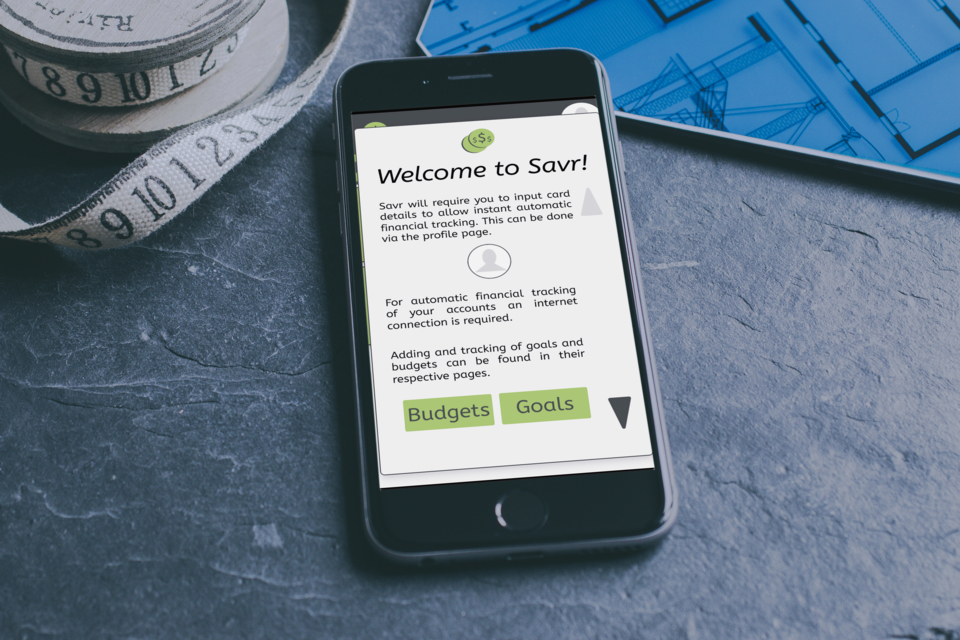
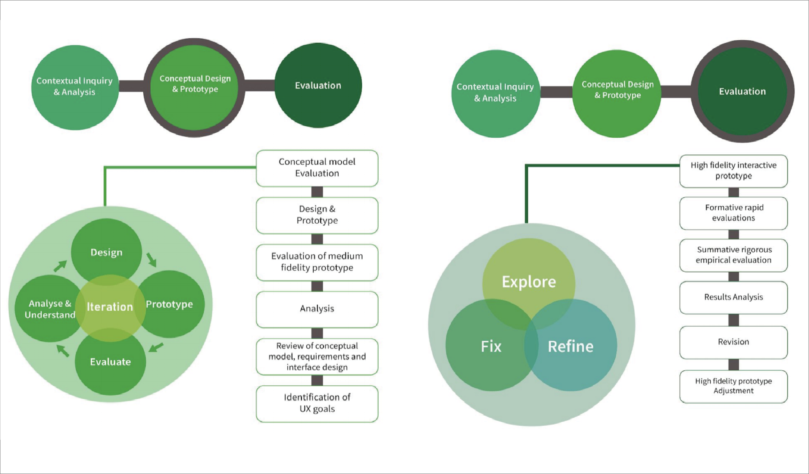
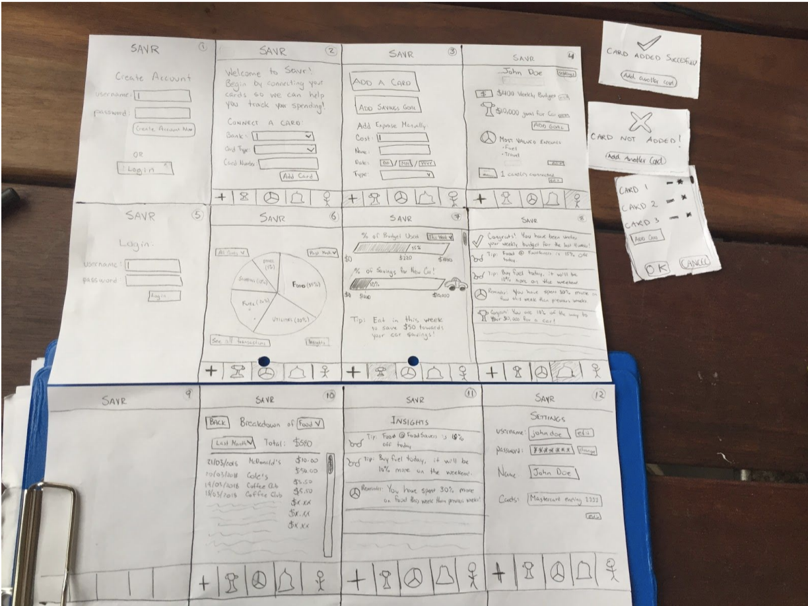
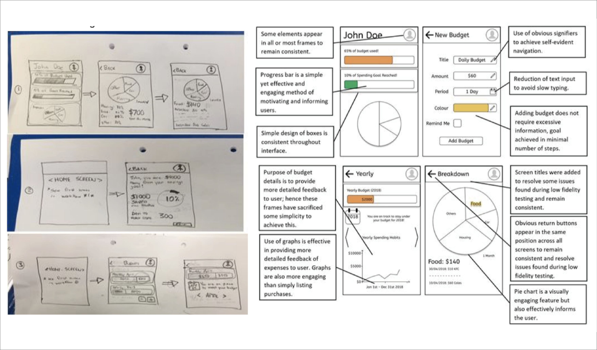
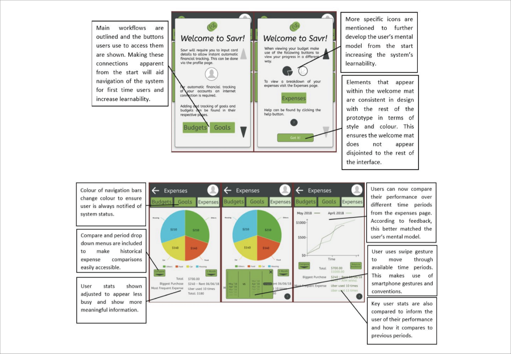
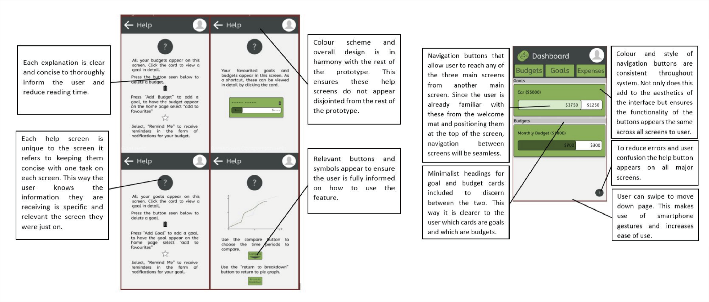
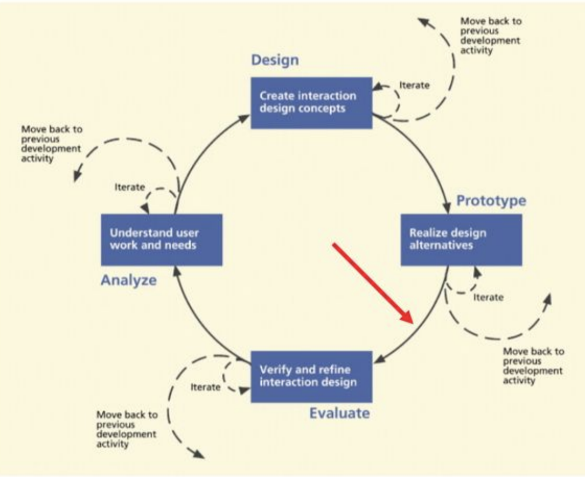

Savr
A personal saving and budgeting mobile app

Context
Delievered as part of the Human-Computer Interaction course at UQ, the project brief required us to work through an interaction design and human-centred design process for an interactive system. The goal for the project was learning about HCI, UX and usability and not producing a polished product.
Domain - Behaviour Change
Developing apps that help people change their habits is a growing domain and presents some unique opportunities (and challenges) in HCI. It may be that people want to get healthier, reduce food waste, decrease their consumption, save money or stop procrastinating. Whatever it is, when it comes to persuasive technology, there is a range of HCI considerations that support the development of a successful app in this domain.
Description
Savr is a money management system that will be used by consumers who are seeking to save more money. The system will allow users to easily track their expenses, create goals and budgets as well as track their progress. Overall, the system will strive to cause a change in spending behaviour.
The Challenge
Design and develop an application to be used on a mobile device that tracks and displays the expenses of an individual and provides feedback to help them reduce unnecessary expenses, work towards user set saving goals and ultimately better manage their budgets.
Design Process
Design Planning
Our initial project planning phase spanned across multiple workshops and ideation activities in to the course brief. From these sessions, our team decided to focus on designing for people aged between 18 - 25 in order to help save money and manage their expenses. Once our initial literature review and proposal was accepted, we designed our sprints to help us keep on track for our submission in week 13.
Research + Testing
We set about further researching the needs, requirements and users that were relevant for such a web project and began developing early novel concepts for displaying the data in a meaningful way. This involved rapid iteration techniques and the design of artifacts like storyboards and use case stories, building up to early paper prototypes and wireframes. Similar existing applications were studied, background research was gathered and face-to-face interviews as well as online surveys were coordinated.

A total of 5 user tests were completed on the paper prototype seen above. The testing involved asking the participant to complete a number of tasks while the invigilator took detailed observations before the participant completed a questionnaire. A similar method was then used as before, survey responses and observations were grouped by common themes that appeared. From these results a number of insights were gathered, most importantly it was found that users expected a clear “home” button or return button, the bottom buttons were unclear, progress bar alone was not enough to motivate users, the pie chart and goal features were liked. The testing of the low fidelity prototype completed the first iteration of the design process.

Medium Fidelity
Following the evaluation of the low fidelity prototype the conceptual model and system requirements were reviewed, initial design principles were identified and a medium fidelity prototype was created which embodied each of these steps. Through background research, a set of relevant design principles were found. These design principles were then utilised in the production of the interactive medium fidelity prototype.


High Fidelty
In the final iteration of the design process seen below a high fidelity interactive prototype was developed which attempted to utilise the findings from the previous prototype, meet the UX goals that were set as well as encapsulate the revised conceptual model, system requirements, and design principles. This high fidelity prototype was then thoroughly tested by user testing and questionnaire based evaluations, an expert heuristic evaluation and a cognitive walkthrough. In addition, a summative rigorous empirical evaluation with a particular focus on UX measurement which utilised the System Usability Scale (SUS) was completed. Finally, based on the evaluation of this data the high fidelity prototype was revised and a number of future recommendations were made.

Evaluation
At this point, Savr is deep into the agile design process, with this most recent iteration of the Savr
UI interface completing the fourth cycle of the IDCL, short for Interaction Design Lifecycle
(Hartson and Pyla, 2012) as shown in diagram. In order to continue improving on Savr, it is
important to move into the evaluation stage once again and test the changes made to Savr, then
learn how the changes made to Savr impacted user experience and how further changes can be
integrated to improve the prototype. Our
efforts for the course rewarded with a High Distinction grade.
View Savr Prototype
View the full project report